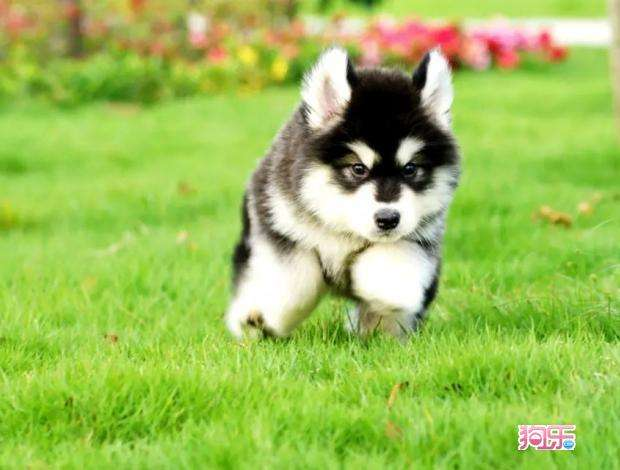
阿拉斯加
阿拉斯加雪橇犬结实、有力、肌肉发达而且胸很深。当它们站立时，头部竖直，眼神显得警惕、好奇,头部宽阔，耳朵呈三角形，警惕状态时保持竖立。口吻大，宽度从根部向鼻尖渐收，口吻既不显得长而突出，也不显得粗短。被毛浓密,阿拉斯加雪橇犬有各种不同的颜色，如灰、黑白、红棕。
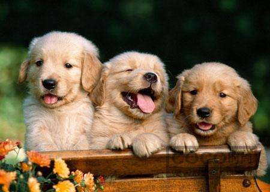
金毛
金毛犬,单猎犬，作为用来在猎捕野禽的寻回犬而培养出来的，游泳的续航力极佳。金毛的独特之处在于它讨人喜欢的性格，是属于匀称、有力、活泼的一个犬种,表情友善，个性热情、机警、自信而且不怕生。金毛犬最早是一种寻回猎犬。对小孩子或者婴儿十分友善。
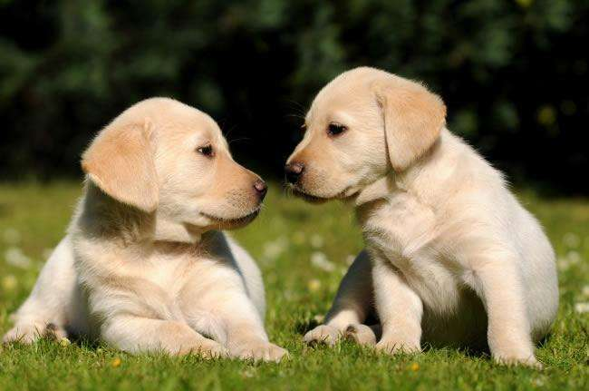
拉布拉多
拉布拉多寻回犬因原产地在加拿大的纽芬兰与拉布拉多省而得名。拉布拉多寻回犬是一种大型犬类，个性忠诚、大气、憨厚、温和、阳光、开朗、活泼，智商极高，也对人很友善，拉布拉多猎犬有四种颜色，分别为：黑色、黄色、巧克力、米白色。最常见的是黑色，黄色。
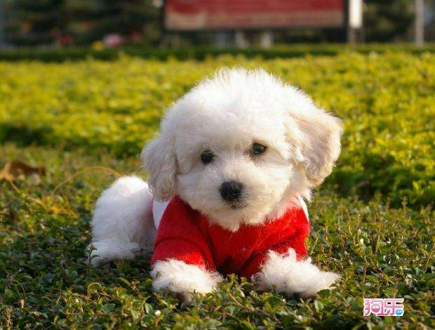
比熊
比熊犬性情温顺、敏感、顽皮而可爱。逗人喜欢的特点也是此品种是否纯正的标志，或者说至少应该有这一点。整体外貌而言，比熊犬是小型犬，健壮，萌，蓬松的小尾巴贴在后背，有着一双充满好奇的黑色眼睛。
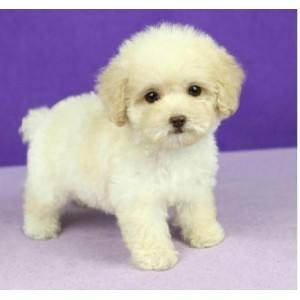
泰迪
它是聪明而善解人意的犬种。多年以来，它一直被认为是法国的国犬。贵宾犬根据体型大小被AKC标准分为标准型，迷你型，玩具型三种。贵宾犬气质独特，造型多变，赢得了许多人的欢心，给人一种漂亮的、聪明的印象。
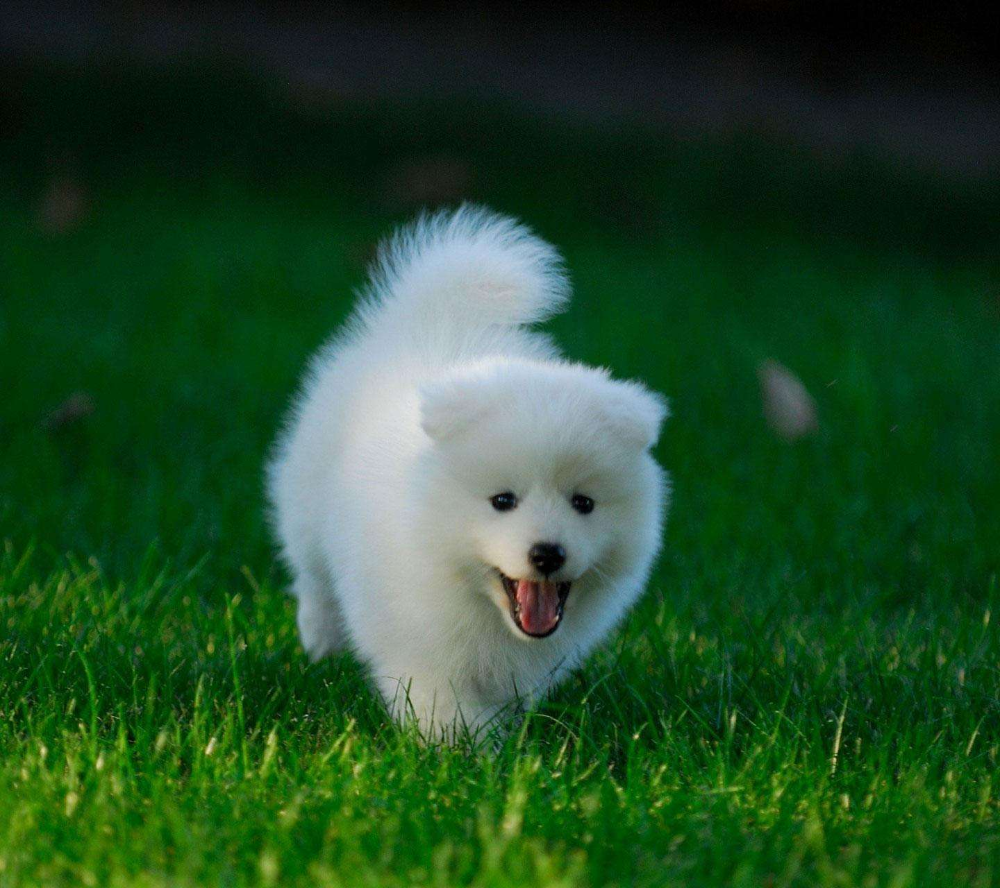
萨摩耶
萨摩耶犬机警、强壮、灵活、美丽、高贵优雅、乖巧可爱，有着非常引人注目的外表，体格强健，有“微笑天使”的称号,一岁前调皮、灵动。萨摩耶犬的颜色为白色；部分带有很浅的浅棕色、奶酪色、浅棕色。
苏格兰折耳猫
苏格兰折耳猫，这种猫在软骨部份有一个折，使耳朵向前屈折，并指向头的前方。也正因如此，这种猫患有先天患有骨科疾病，时常用坐立的姿势来缓解痛苦。
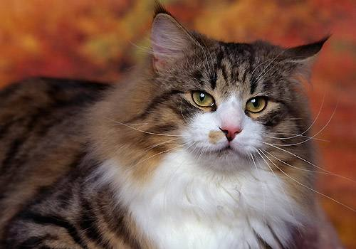
挪威森林猫
挪威森林猫是斯堪地半岛特有的品种，挪威森林猫外观与缅因猫相似，与西伯利亚森林猫同列。挪威森林猫体大肢壮，，行走时颈毛和尾毛飘逸，非常美丽。
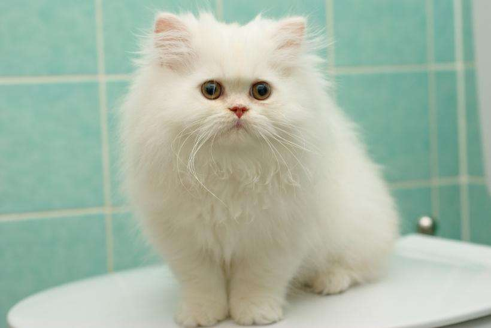
波斯猫
波斯猫有讨人喜爱的面庞，长而华丽的背毛，优雅的举止，故有“猫中王子”、“王妃”之称，是世界上爱猫者最喜欢的纯种猫之一，占有极其重要的地位。
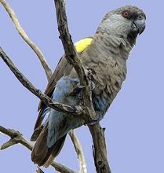
鲁佩尔氏鹦鹉
鲁佩尔氏鹦鹉是相当少见的种类,生性安静害羞，由于数量很少、价位高且不普及所以相关数据相对的少，它们并无其它的亚种,成熟的母鸟在腹部、腰部、背部与尾部有亮眼的蓝色，公鸟则无。
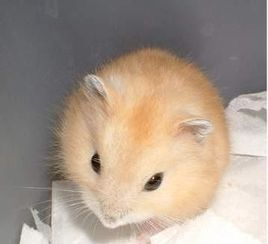
布丁鼠
布丁鼠是加卡利亚仓鼠的一种，和老公公鼠、黄金鼠等一样都属于仓鼠科，但布丁鼠毛色很纯，有一对乌溜溜的大眼睛，模样可爱，各地均可饲养。深受人们的喜爱，是购买的最佳选择。
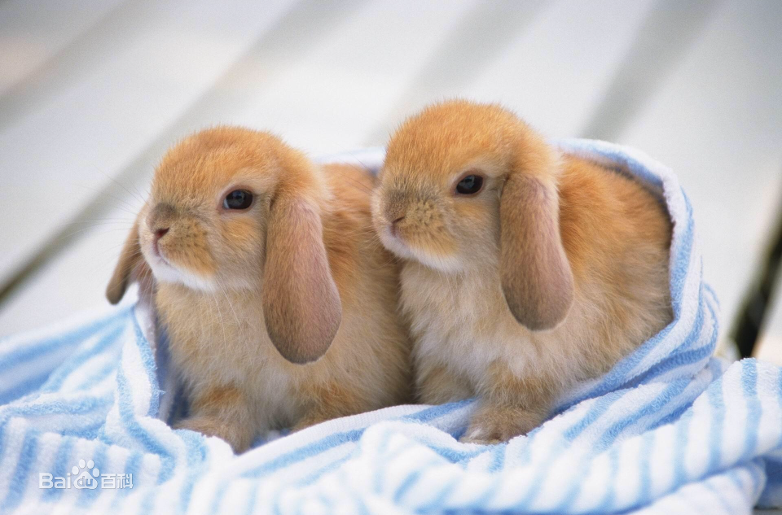
垂耳兔
垂耳兔的耳朵下垂，从外观来看有短、中、长毛之分，脸型也不同。成年体重2.5kg，体长40cm左右。个体的大小、毛色，体长等与其他兔子各不相同。欧洲有多种垂耳兔，“垂耳兔”是它们的通称。| 萌宠购单 | |
| 姓名： | |
| 性别： | 男女 |
| 联系方式： | |
| 邮箱： | |
| 备注： | |
| 意见与建议： | |